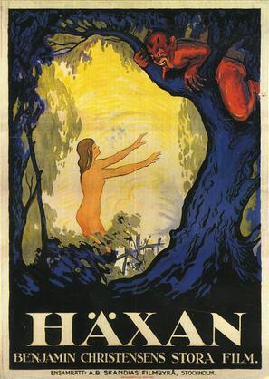

Haxan

Benjamin Christensen
1922
105 minutes
Wikipedia link
IMDB link
TV Tropes link
This is text.
Time to choose something different:
- Bet those witches could put on a pretty bitchin' fireworks display if they started going stir crazy... - Turn to section 66
- I've heard witches kill babies, but Cossacks will do the same thing if given a chance. - Turn to section 7
- I guess burning witches is fine if you don't have the option of tossing them in a volcano. - Turn to section 105